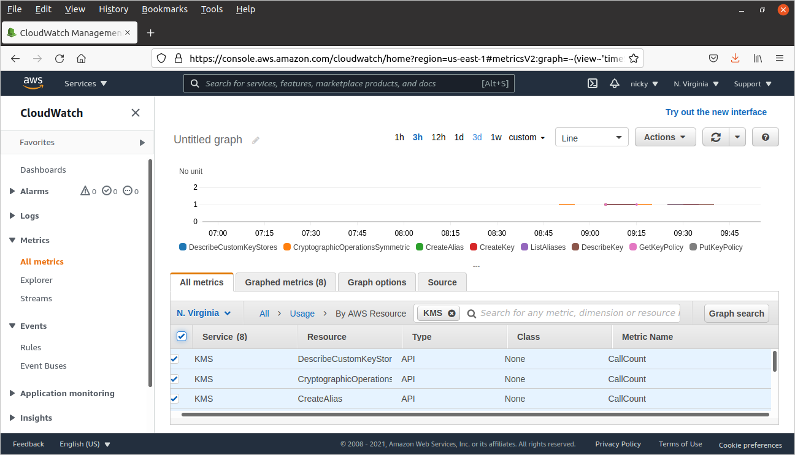

KMS
- KMS là gì?
-
KMS (Key Management System) là dịch vụ cho phép tạo và quản lý các key mã hóa. Các key này dùng để bảo vệ dữ
liệu người dùng
-
KMS sử dụng hardware security modules (HSM) để bảo vệ và xác thực key.
Hai Region sau không hỗ trợ Beijing và Ningxia (Trung Quốc)
-
Các bước thực hiện thao tác với KMS: Hướng
dẫn cài đặt KMS
- Một số lệnh quan trọng
-
aws configure
-
aws kms create-key
-
aws kms create-alias --alias-name alias/FirstCMK --target-key-id
'6a535ef0-db0c-4b47-8ea6-b83e4069aa09'
-
aws kms create-key --origin EXTERNAL
-
aws kms get-parameters-for-import --key-id external-key-id --wrapping-algorithm RSAES_OAEP_SHA_1
--wrapping-key-spec RSA_2048
-
aws kms get-parameters-for-import --key-id d16a6752-a128-457c-8234-e7aa2cf8f4b2 --wrapping-algorithm
RSAES_OAEP_SHA_1 --wrapping-key-spec RSA_2048
-
openssl enc -d -base64 -A -in pkey.b64 -out pkey.bin
-
openssl enc -d -base64 -A -in token.b64 -out token.bin
-
openssl rand -out genkey.bin 32
-
openssl rsautl -encrypt -in genkey.bin -oaep -inkey pkey.bin -keyform DER -pubin -out
WrappedKeyMaterial.bin
-
aws kms import-key-material --key-id d16a6752-a128-457c-8234-e7aa2cf8f4b2 --encrypted-key-material
fileb://WrappedKeyMaterial.bin --import-token fileb://token.bin --expiration-model KEY_MATERIAL_EXPIRES
--valid-to 2021-02-01T12:00:00-08:00
-
aws kms schedule-key-deletion --key-id 6a535ef0-db0c-4b47-8ea6-b83e4069aa09 --pending-window-in-days
7
- Mã hóa với AWS KMS – Không sử dụng Data key
echo "New secret text" > NewSecretFile.txt aws kms encrypt --key-id alias/ImportedCMK --plaintext fileb://NewSecretFile.txt --encryption-context project=kmsworkshop --output text --query CiphertextBlob | base64 --decode > NewSecretsEncryptedFile.txtaws kms decrypt --ciphertext-blob fileb://NewSecretsEncryptedFile.txt --encryption-context project=kmsworkshop --output textecho The_text_receive | base64 --decode
- Sử dụng metric để thống kê KMS
